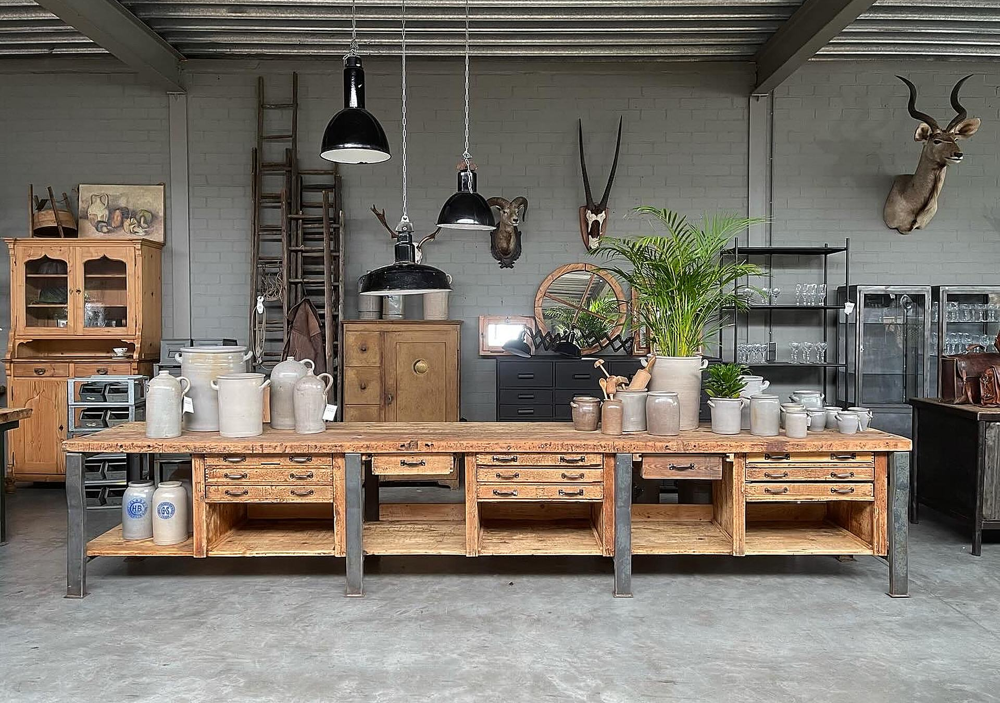
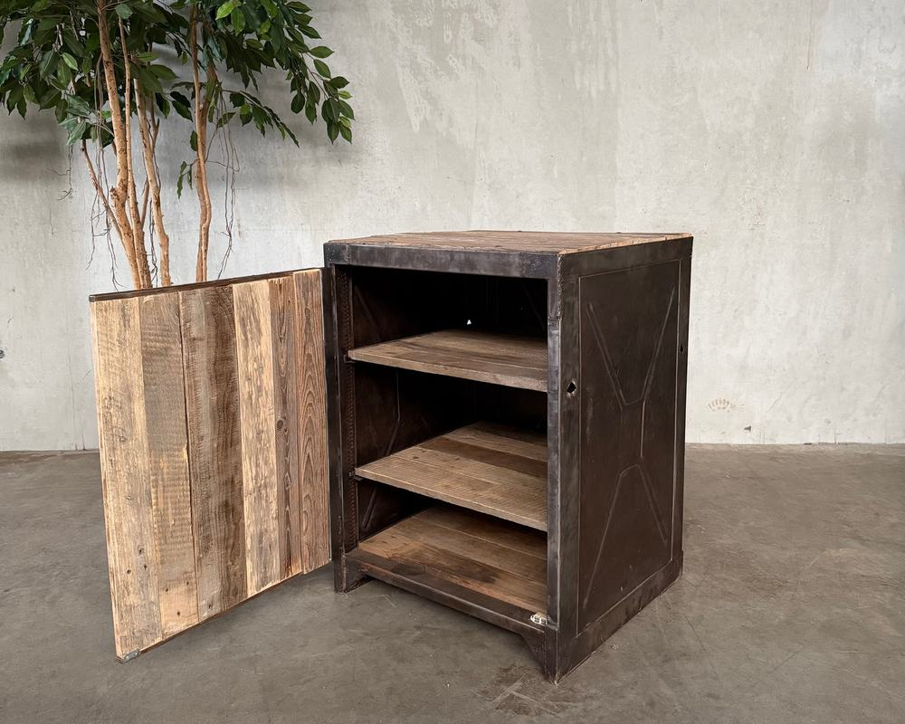
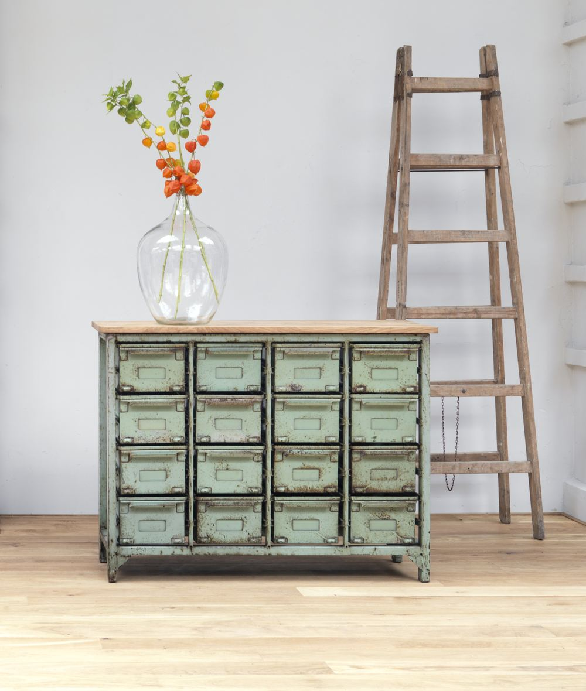

Vintage meubels voor stoere mensen met lef
Uit oude fabrieken, scholen en ziekenhuizen, zorgvuldig gerestaureerd in onze eigen werkplaatsen. Kom kijken in onze showroom in Breda.
Nu in de collectie
Veel stukken zijn uniek, dus op is op. Klik op een meubel voor de maten en meer informatie.
Elk stuk heeft zijn eigen verhaal
We halen onze meubels uit oude fabrieken, scholen, ziekenhuizen en particuliere huizen. In onze werkplaatsen krijgen ze een tweede leven.

Ook meubels op maat
Zoek je een andere maat of kleur? We maken ook maatwerkmeubels. Met de hand gemaakt, en met de hand geschilderd of gepoedercoat.
Kleine oneffenheden van het hout of ijzer horen erbij, dat is juist de charme. In de winkel staan altijd diverse op maat gemaakte meubels, zodat je een goed beeld krijgt van het resultaat.
- Met de hand gemaakt
- Vooraf een offerte
- Voorbeelden in de winkel
- Voor je huis of bedrijf
Zo krijg je het thuis
Een werkbank van twee meter past niet in elke auto. Daarom kun je kiezen.
Zelf ophalen
In de showroom in Breda. Parkeren kan voor de deur.
Onze bus lenen
Leen onze VW Transporter. Vraag naar de tarieven.
Laten bezorgen
Door een meubeltransporteur, binnen op de begane grond.
Met PostNL
Kleinere stukken tot 10 kg voor € 6,95 in Nederland.

Een uit de hand gelopen hobby
In 2015 volgde Fleur haar hart en gooide ze het roer om. Met haar oog voor detail kiest ze meubels die iets unieks toevoegen aan elk interieur.
Daniel Klijn, mede-eigenaar, doet de inkoop en logistiek. Hij staat ook regelmatig in de winkel.
Kom langs in de showroom
Wil je een stuk bekijken? Laat weten dat je komt, dan zetten we het voor je klaar.
Fleurs Depot
Eerstvolgende dagen
- Zo 6 decemberopen 12-16 uur
- 25 en 26 decembergesloten
- 1 en 2 januarigesloten
- Zo 3 januariopen 12-16 uur